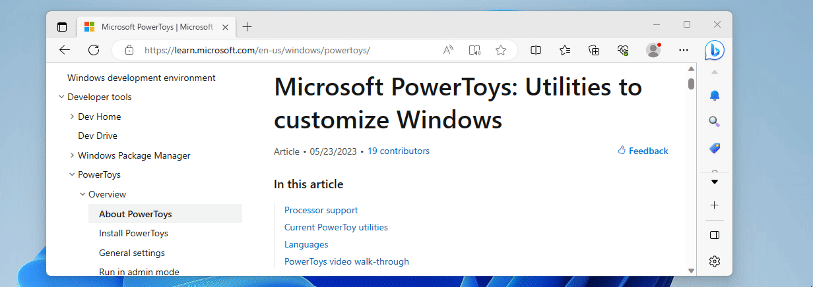

Crop And Lock
Crop And Lock is a PowerToys utility that helps you focus on specific parts of your applications by creating smaller, cropped windows. You can create live thumbnails that mirror changes from the original window, or extract portions of applications into standalone windows for better multitasking and screen real estate management.
This feature is particularly useful when you need to monitor specific areas of applications while working with other programs, or when you want to create custom window layouts that better suit your workflow.

Get started with Crop And Lock
How to use the utility
To start using Crop And Lock, enable it in PowerToys Settings.
Once enabled, focus a Window and press the "Thumbnail" shortcut (default: ⊞ Win+Ctrl+Shift+T) or the "Reparent" shortcut (default: ⊞ Win+Ctrl+Shift+R) to select an area of the window to crop.
Tip
Use Esc to cancel the crop selection.
After you've selected the area of the window, a new window will appear and behave according to the selected crop mode.
Select the Close button of the cropped window to close it and restore the original window.
Crop modes
Thumbnail
Creates a window that shows the selected area of the original window. Any changes to the original window's selected area will be reflected on the thumbnail, but the original application can't be controlled through the thumbnail. This mode has the best compatibility.
Reparent
Creates a window that replaces the original window, showing only the selected area. The application will now be controlled through the cropped window. Closing the cropped window will restore the original window.
Not every window will react well to being contained in another application so this mode has many compatibility issues. It's advisable to use the "Thumbnail" mode instead if you find that a window isn't responding well to being cropped with the "Reparent" mode.
Known issues
Crop And Lock currently has the following known issues:
- Cropping maximized or full-screen windows in "Reparent" mode might not work. It's recommended to resize the window to fill the screen corners instead.
- Some UWP apps won't react well to being cropped in "Reparent" mode. Windows Calculator is a notable example of this.
- Applications that use sub-windows or tabs can react poorly to being cropped in "Reparent" mode. Notepad and OneNote are notable examples of applications that react poorly.
Settings
The following settings are available for the Crop And Lock utility:
| Setting | Description |
|---|---|
| Thumbnail shortcut | The customizable keyboard command to activate the thumbnail mode for cropping and creating a thumbnail view. |
| Reparent shortcut | The customizable keyboard command to activate the reparent mode for cropping and reparenting to a new window. |
Install PowerToys
This utility is part of the Microsoft PowerToys utilities for power users. It provides a set of useful utilities to tune and streamline your Windows experience for greater productivity. To install PowerToys, see Installing PowerToys.